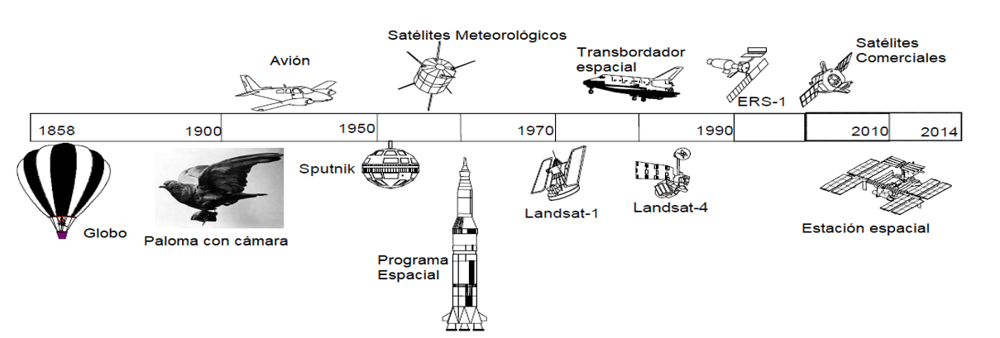

¿Qué es la Percepción Remota?
La percepción remota (también llamada teledetección) es el arte, la ciencia y la tecnología de obtención de información confiable sobre objetos físicos. y el medio ambiente, a través del proceso de grabación, medición e interpretación de imágenes y representaciones digitales de patrones de energía derivados de sistemas de sensores de no contacto.
Esto es, la percepción remota se refiere a la recepción, preprocesamiento y análisis de datos obtenidos mediante sensores electromagnéticos de un fenómeno u objeto sin estar en contacto físico con el objeto de estudio. .
Evolución de los sistemas de percepción remota.
Estos sistemas han evolucionado de acuerdo con la capacidad tecnológica del humano, desde que el hombre logro volar en un globo aerostático para poder hacer observaciones desde las alturas, hasta llegar al espacio a bordo de las estaciones espaciales, claro esto sin antes haber utilizado tecnológicas como las de aviación. En la imagen a continuación se aprecia brevemente la evolución cronológica de estos sistemas de percepción remota. .
